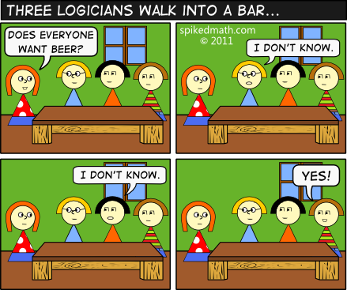

C16 Logique ¶
"Contrariwise, if it was so, it might be; and if it were so, it would be; but as it isn't, it ain't. That's logic."
(in Through the looking glass, 1871)
Cours¶
Attention
Ce diaporama ne vous donne que quelques points de repères lors de vos révisions. Il devrait être complété par la relecture attentive de vos propres notes de cours et par une révision approfondie des exercices.
Travaux dirigés¶
Travaux pratiques¶
Note
Tous les exercices sont à faire en OCaml en utilisant le type vu en cours permettant de représenter une formule logique :
type fl =
| Top | Bot
| Var of int (*les variables propositionnelles*)
| Non of fl
| Ou of fl*fl
| Et of fl*fl
| Imp of fl*fl
| Equ of fl*fl
fl -> int calculant la taille d'une formule logique a été aussi donné en cours :
let rec taille fl =
match fl with
| Top | Bot | Var _ -> 1
| Non sf -> 1 + taille sf
| Ou (sf1, sf2) -> 1 + taille sf1 + taille sf2
| Et (sf1, sf2) -> 1 + taille sf1 + taille sf2
| Imp (sf1, sf2) -> 1 + taille sf1 + taille sf2
| Equ (sf1, sf2) -> 1 + taille sf1 + taille sf2;;
 Exercice 1 : Hauteur d'une formule logique¶
Exercice 1 : Hauteur d'une formule logique¶
Ecrire une fonction hauteur fl -> int qui renvoie la hauteur d'une formule logique.
Exercice 2 : Affichage d'une formule logique¶
-
Ecrire une fonction
Affiche à l'écran :print_formule fl -> ()qui affiche à l'écran une formule logique, Par exemple :((p1 ∧ ¬p2) → p3)Aide
On pourra utiliser les symboles unicodes des formules logiques qu'on peut obtenir dans VS Code en maintenant enfoncé les touches Ctrl et Shift puis en tapant
usuivi du caractère unicode.- pour \(\top\) :
22A4 - pour \(\bot\) :
22A5 - pour \(\neg\) :
00AC - pour \(\wedge\) :
2227 - pour \(\vee\) :
2228 - pour \(\to\) :
2192 - pour \(\leftrightarrow\) :
2194
- pour \(\top\) :
-
Modifier la fonction précédente afin qu'elle affiche les variables propositionnelles
p,q,r, ... au lieu dep1,p2,p3, .... L'affiche de la formule donnée en exemple donnera alors((p ∧ ¬q) → r).
Exercice 3 : Valeur de vérité d'une formule logique¶
On définit les valeurs de vérité avec le type bool de OCaml, true correspond à \(\mathbb{1}\) et false à \(\mathbb{0}\).
-
Ecrire les fonctions
fnonbool -> bool,fet,fou,fimp,fequtoute de signaturebool -> bool -> boolqui correspondent à la sémantique des connecteurs de la logique propositionnelle. -
On représente une valuation par un tableau de booléens, par exemple le tableau
[| true; true; false |]correspond à la valuation \(\varphi(p_1)=\mathbb{1}\), \(\varphi(p_2)=\mathbb{1}\) et \(\varphi(p_3)=\mathbb{0}\). Ecrire une fonctioneval : array bool -> fl -> booldonnant la valeur de vérité d'une formule dans le contexte de la valuation donnée par le tableau de booléen.
Exercice 4 : Enumération des valuations¶
Le but de l'exercice est d'énumérer de différentes façon les \(2^n\) valuations possibles de \(n\) variables propositionnelles
-
Utilisation d'un compteur binaire : écrire une fonction
incremente : bool array -> boolqui ajoute 1 à la valuation donnée en argument et renvoietrues'il n'y a pas eu de dépassement de capacité. Dans le cas contraire, la valuation n'est pas modifiée et la fonction renvoiefalse. Par exemple sivest le tableau[| true; false; true |]alorsincremente vrenvoietrueet modifie v en[| true; true; false |]. -
Conversion en base deux : écrire une fonction
dec_to_bin : int -> int -> bool arrayqui prend en entrée un entier positifnet un nombre de bitsbet renvoie l'écriture binaire surbbits densous la forme d'un tableau debbooléens. -
Utilisation des codes de Gray, l'avantage de ces derniers est qu'on énumère les possibilités en changeant un unique caractère à chaque itération.
L'algorithme d'énumération est le suivant :- On commence par le code ne contenant que des 0
- S'il y a un nombre pair de 1, on inverse le dernier chiffre
- Sinon on inverse le chiffre situé à gauche du 1 le plus à droite
On doit conserver pour chaque valuation la parité du nombre de 1 qu'il contient, pour cela on définit le type :
type valuation = { t : bool array; (* le tableau de booléen *) mutable parite : bool (* la parité du nombre de 1*)}-
Ecrire une fonction
switch : valuation -> int -> unitqui inverse l'un des bits d'un code de Gray. -
Ecrire une fonction
first : int -> valuationqui renvoie le premier code de Gray (c'est-à-dire celle correspondante à toutes les variables ayant pour valeur \(F\)) -
Ecrire une fonction
next : valuation -> unitqui met à jour la valuation en passant à la valeur suivante dans l'énumération de Gray.Aide
Pour gérer le cas où on demande le code qui vient après le dernier code (c'est-à-dire qu'il n'y a pas de chiffre à gauche du 1 situé le plus à droite), on pourra au choix lever une exception (par exemple
Exitest prédéfinie dans le langage) ou alors renvoyer un booléen qui indique si le code a pu être incrémenté ou non (la signature est dans ce casnext : valuation -> bool)
Exercice 5 : Construction de la table de vérité d'une formule¶
Dans cet exercice, on veut écrire une fonction permettant d'afficher à l'écran la table de vérité d'une formule sur l'exemple de la formule ((p ∧ ¬q) → r) on veut obtenir à l'écran :
On donne ci-dessous une fonction entete permettant d'afficher l'entête d'une table de vérité dont la liste des variables est donnée est argument :
let print_var x =
print_char (char_of_int ((int_of_char 'o')+x));;
let entete vars =
List.iter (fun x -> print_string "│"; print_var x) vars;
print_endline "│F│";
print_string "├";
for i=0 to (List.length vars - 1) do
print_string "─┼";
done;
print_endline "─┤";;
-
Ecrire une fonction
liste_var : fl -> int listqui renvoie la liste des variables logiques utilisée dans une formule, par exempleliste_var Imp (Et ((Var 1),(Non (Var 2))), (Var 3))renvoie la liste[1; 2; 3]. -
Ecrire une fonction
table_verite : formule -> unitqui affiche à l'écran la table de vérité d'une formule. -
Tester votre programme sur des formules connues ou sur celles vues en cours ou en TD.
Exercice 6 : Satisfiabilité d'une formule¶
On considère qu'une valuation est donnée sous la forme d'une tableau de booléens bool array. Par exemple [| false; true; false |] correspond à la valuation \(\varphi(p_1)=\mathbb{0}\), \(\varphi(p_2)=\mathbb{1}\) et \(\varphi(p_3)=\mathbb{0}\).
- Ecrire une fonction
sat_solve : fl -> bool * bool arrayqui utilise la table de vérité afin de tester si une formule est satisfiable et renvoietrueet la valuation correspondante si la formule est satisfiable etfalseaccompagné de la valuation fausse pour toutes les variables dans le cas contraire. Par exemple, pour la formulep ∨ qle fonction renvoietrueet (par exemple) la valuation[|false; true|].
Exercice 7 : Equivalence de deux formules logiques¶
Ecrire une fonction sont_equiv fl -> fl -> bool qui teste l'équivalence de deux formules logiques.
Exercice 8 : Mise sous forme normale¶
- Ecrire une fonction
convertit: bool array -> flqui prend en argument un tableau de booléens représentant une valuation et la convertit en clause normale conjonctive sur ces variables par exempleconvertit [|true; false; false |]renvoieEt (Et (p, Non q), Non r)(c'est à dire \(p ∧ ¬q ∧ ¬r\)). - Ecrire une fonction
fnd: fl -> flqui renvoie la formule logique donnée en argument sous forme normale disjonctive en utilisant la méthode "de la table de vérité"
Exercice 9 : Implémentation de l'algorithme de quine¶
Dans cet exercice, on implémente l'algorithme de Quine en supposant que les formules sont données sous forme normale conjonctive (fnc). Par exemple avec 3 variables logique \(p, q\) et \(r\), \(P = (\neg p \vee q \vee r) \wedge (p \vee q) \wedge (p \vee q \vee \neg r)\) est sous fnc.
On rappelle que chaque élément de la conjonction s'appelle une clause, par exemple \((\neg p \vee q \vee r)\) est une clause de P. Chaque clause est composé de littéraux, c'est-à-dire d'une variable logique ou de sa négation, on est donc amené à définir les types suivants en OCaml afin de représenter un fnc :
type litteral =
| Var of int (* une variable logique *)
| NVar of int (* la négation d'une variable logique*)
type clause = litteral list
type fnc = clause list
-
Créer la variable représentant la fnc \((p_1 \vee p2) \wedge (\neg p_2 \vee \neg p_3) \wedge (\neg p_1 \vee p_3) \wedge (p_1 \vee p_3)\)
-
On donne ci-dessous une fonction permettant d'afficher une clause, en utilisant cette fonction, écrire
print_fnc -> fnc -> unitqui affiche dans le terminal une fnc -
Ecrire la fonction
extrait_var : fnc -> intqui renvoie lorsqu'elle existe, la première variable de la première clause de de la fnc donnée en argument. -
Ecrire la fonction
substitue_fnc fnc -> int -> bool -> fncqui renvoie la fnc obtenue en remplaçant une variable logique par \(\top\) ou \(\bot\) dans toutes les clauses que contient cette fnc.Aide
On distinguera les cas suivants :
- Si le remplacement conduit à avoir un littéral vrai dans une clause alors cette clause est vraie et on la supprime entièrement de la fnc
- Si le remplacement conduit à avoir un littéral faux dans une clause alors ce littéral est supprimé entièrement de la clause
-
Ecrire une implémentation de l'algorithme de Quine qui renvoie un booléen indiquant si la fnc donnée en argument est satisfiable ou non.
-
Modifier la fonction précédente de façon à obtenir aussi la valuation rendant la formule satisfiable dans le cas où elle l'est.
Humour d'informaticien¶
